Spreadsheet localization for Unity — a ByteLura product
Gallery
LingoSheets Pro in the Editor and at runtime — every frame is the real window, the real sample, or the real report, nothing staged.
The fifteen frames below walk through the package in order: the home window, import, the local file at the centre, language switching, binding components, the fallback chain, the missing-translation report, pseudo-localization, right-to-left handling, fonts, export, the Hello World Tour sample, setup, Verify Install, and the package at a glance. Each frame is captioned with what it shows; the Hello World Tour sample guide tours the same features step by step, and Quick Start gets you from install to first import.
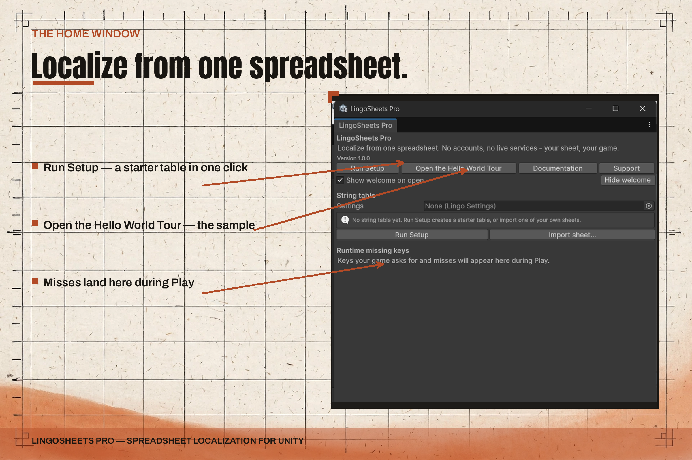
The LingoSheets Pro home window, with setup, import and export, the sample tour and Verify Install in one place.
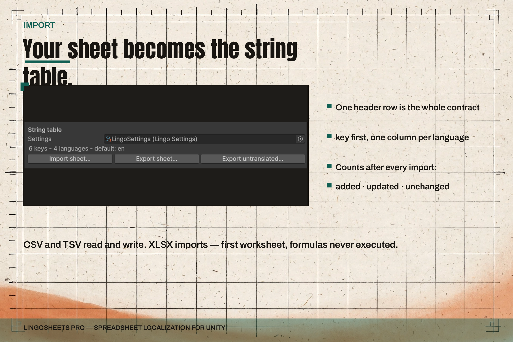
Import settings and the XLSX source line — a local spreadsheet file becomes the string table.
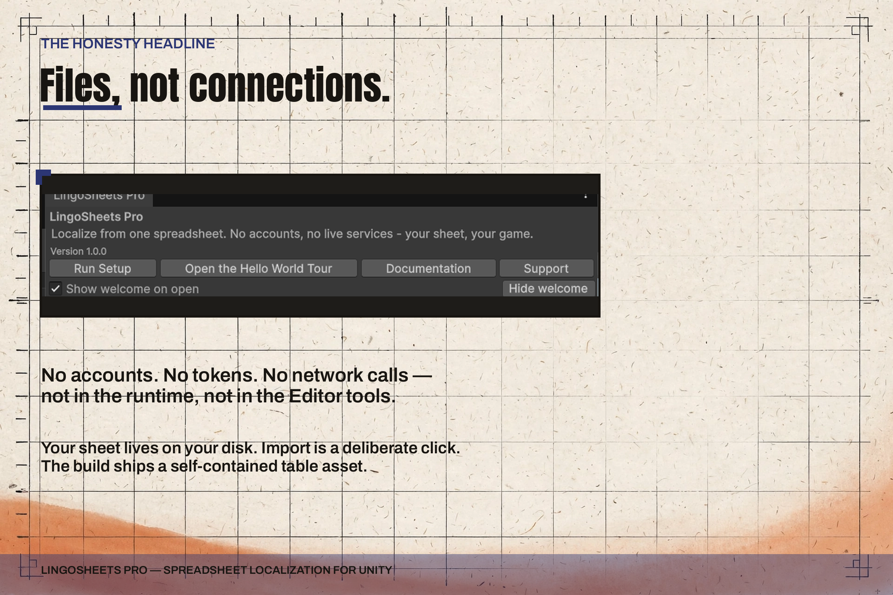
The local file at the centre — no accounts, no tokens, no hosted service between the sheet and the game.
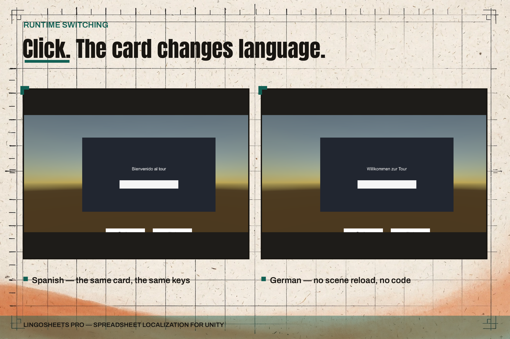
The same greeting card in Spanish and German, switched at runtime.
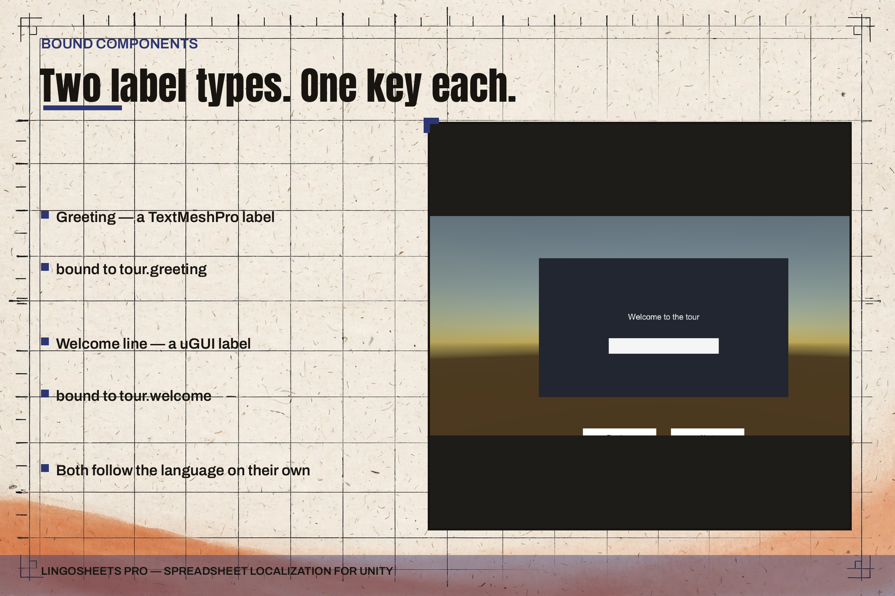
Binding components connect labels and language pickers to keys, so most UI text needs no switching code.
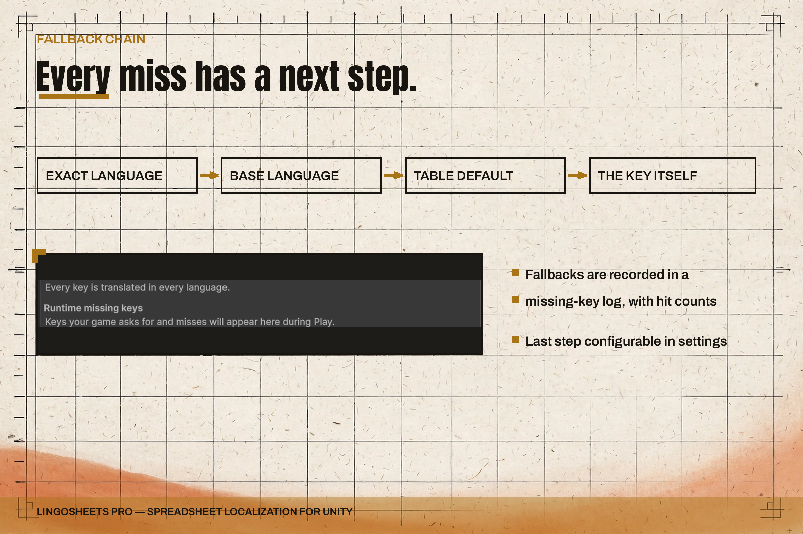
The fallback chain: exact language, base language, table default, then the key itself.
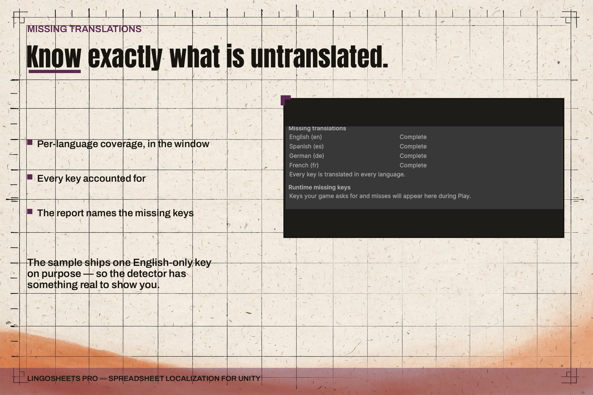
The missing-translation report names every untranslated key per language.
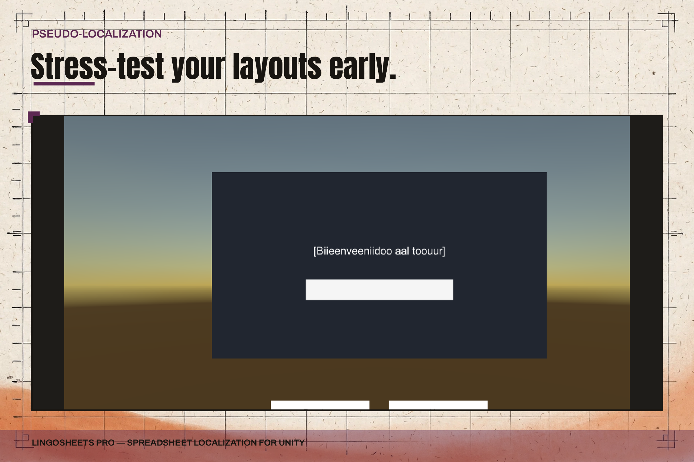
Pseudo-localization lengthens and marks every string, so layout problems surface before real translations arrive.
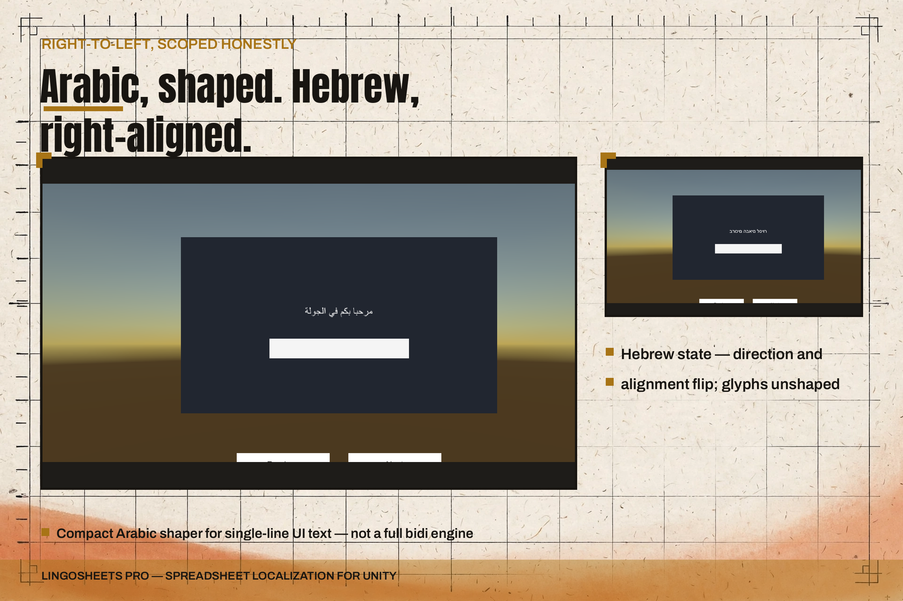
Right-to-left handling — shaped Arabic on the card, with the Hebrew scoping note kept honest.
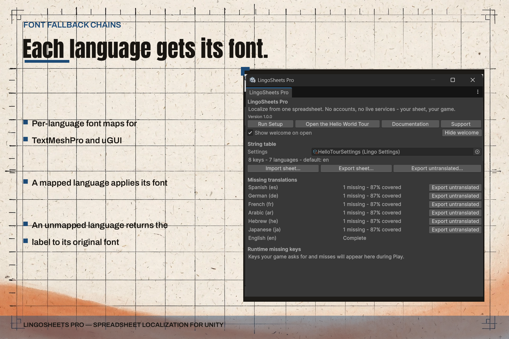
Font and fallback-chain settings — the HelloTourSettings window with 8 keys across 7 languages and the missing-translation table.
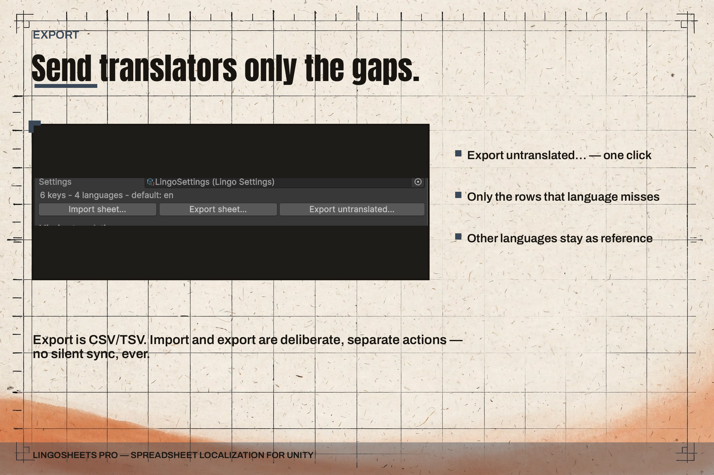
Export turns the string table back into a sheet — full export, or untranslated keys only for translators.
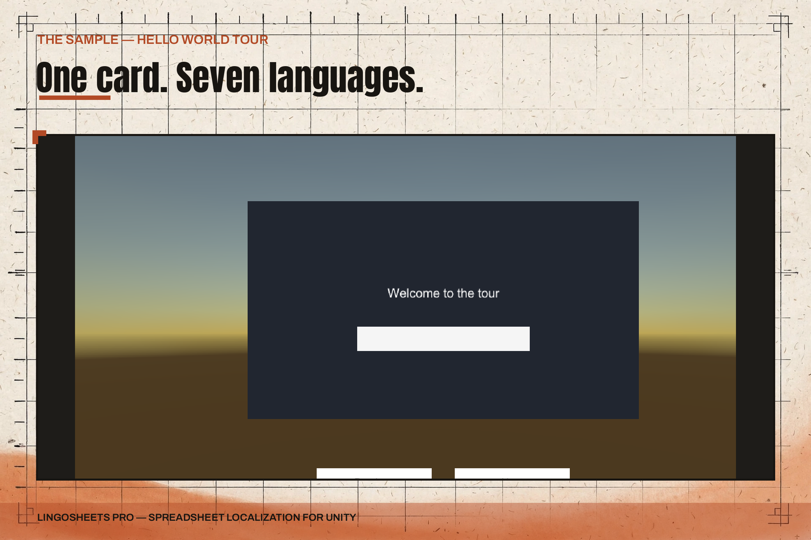
The Hello World Tour sample card — "Welcome to the tour", the first frame of the tour.
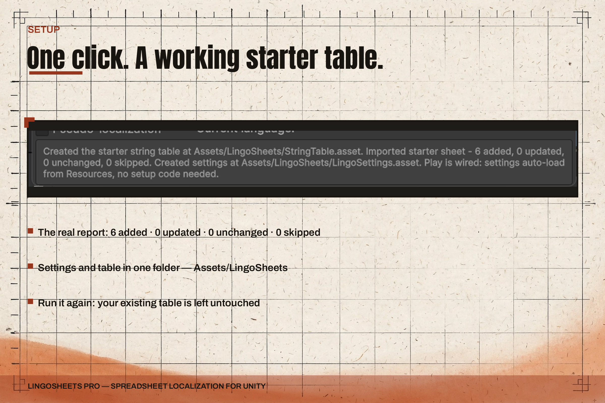
Run Setup creates the starter table — 6 keys in English, Spanish, German, and French.
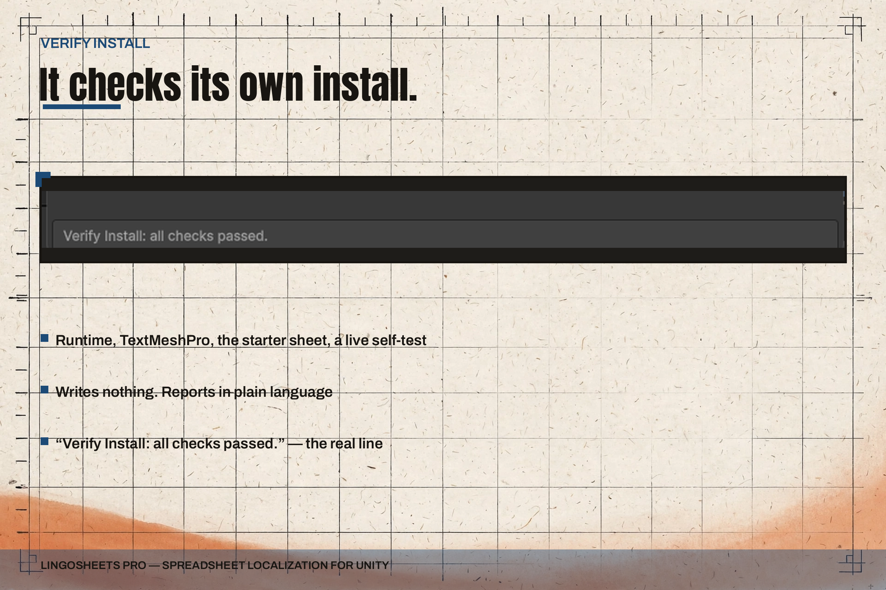
Verify Install checks the package is wired up correctly before you start.
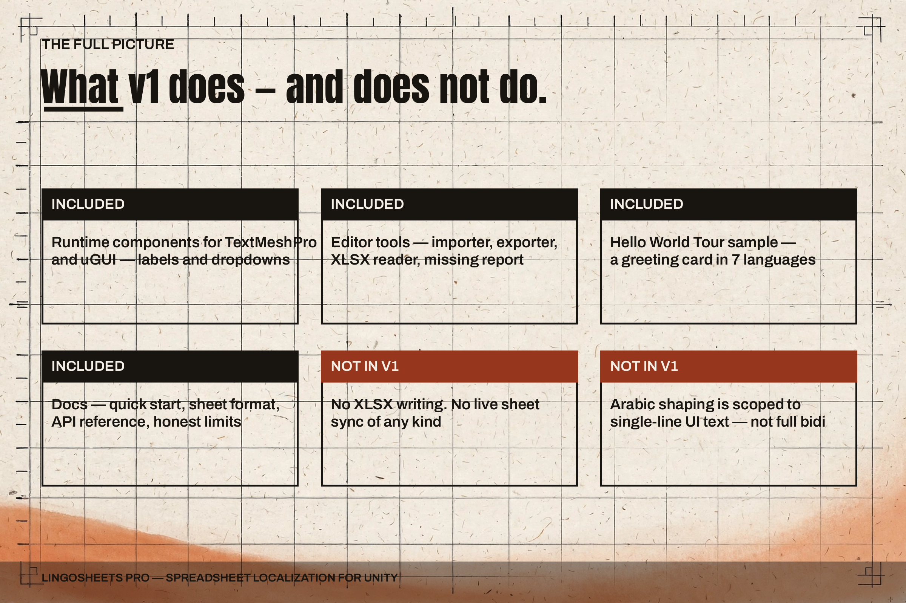
Everything in the package at a glance — runtime components, Editor tools, the starter table, and the sample tour.